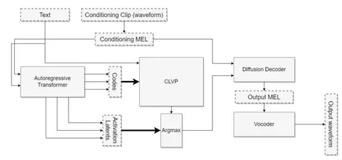
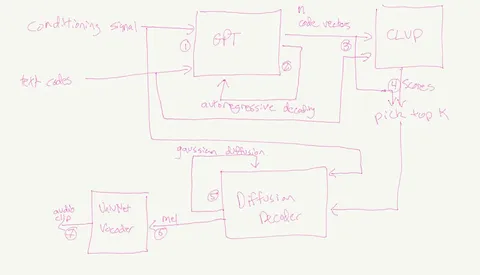
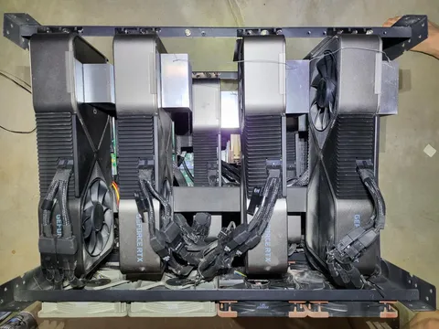

В 2017–2019 годах TTS-сообщество начало учиться на заметно больших объёмах данных, чем до этого, и выбирало между двумя классами моделей, которые можно обучать. Первый вариант — взять трансформер из NLP и научить его предсказывать аудиотокены. Второй — использовать диффузии, как в генерации изображений, и генерировать спектрограммы. Оба варианта давали частичный результат. Диффузии хорошо передавали голос, но интонацию — слабо. Трансформеры, наоборот, хорошо моделировали интонацию, но теряли сходство с голосом.
В 2022 году инженер Джеймс Беткер, много лет проработавший в Garmin, решил пойти другим путём. В одиночку он начал собирать свою модель дома! Он купил восемь б/у RTX 3090, которые до этого майнили крипту, собрал из них кластер, и два года вёл блог, в котором подробно описывал каждую итерацию своего ресёрча. Формат — не статьи с графиками, а Markdown и картинки от руки. Иногда — просто пост с одной мыслью и решением.
Спустя два года такой работы появился TortoiseTTS. Гибрид трансформера и диффузии, вдохновленный архитектурой DALL-e 1, только вместо изображений — аудио.
Что сделал Беткер:
1. Сначала — кодек. Беткер обучил VQ-VAE, который сжимал аудио до 25 токенов в секунду. Это довольно маленький битрейт для получения качественного восстановления, но такой цели и не стояло — кодек нужен был как интерфейс между аудио и трансформером.
2. Потом — трансформер. Модель по тексту и примеру голоса, который надо скопировать, предсказывала токены этого кодека. Поскольку токенов было мало, он мог использовать большие батчи, что критично при ограниченных ресурсах. Но важнее другое: трансформер давал не только токены, но и латенты, из которых эти токены предсказываются. (Они понадобятся нам на следующем этапе.) Именно этот кусок пайплайна отвечает за генерацию правильной похожести голоса и разумные интонации.
3. Дальше — диффузия. По примеру голоса и сгенерированным GPT латентам она предсказывала спектрограмму. Задача этой модельки в том, чтобы получившаяся запись была качественной и хорошо сохранилась похожесть голоса.
4. В конце — предобученный вокодер UnivNet, который предсказывает аудио по спектрограмме.
В результате получился пайплайн: текст → латента (из GPT) → спектрограмма (из диффузии) → аудио. В модельке есть ещё несколько хаков, но мы не останавливаемся на них, чтобы упростить повествование.
За счёт комбинации GPT и диффузии этому способу удалось усесться на оба стула: он хорошо моделировал интонацию и клонировал голос. И это обучилось на кластере из восьми видеокарт!
После выхода Tortoise в 2022 году появилось много похожих работ. Например:
— CosyVoice (Alibaba): заменили VQ-VAE на кодек, обученный на ASR-задаче, чтобы эмбеддинги хранили больше информации о речи. Вместо диффузии применили Flow Matching — он даёт звук быстрее за меньшее число шагов.
— Seed-TTS (ByteDance): заменили токенизатор, отказались от CLVP, дообучили модель на 5 голосах.
— Base TTS (Amazon): взяли большую GPT (1B параметров вместо 300M) и использовали токены из WavLM.
Получается, что Tortoise стал не столько готовым решением, сколько универсальной схемой, которую подхватили сразу несколько крупных команд. Ну а Джеймса Беткера наняли в OpenAI сразу после релиза финальной версии модели.
Эта история — только малая часть интересного из Speech Сourse от Яндекса и ШАД. Все лекции, слайды, домашки и полезные ссылки выложены на GitHub. Курс охватывает биометрию, распознавание, синтез, шумоподавление. А на тему TTS — целых четыре лекции.
Роман Кайль
